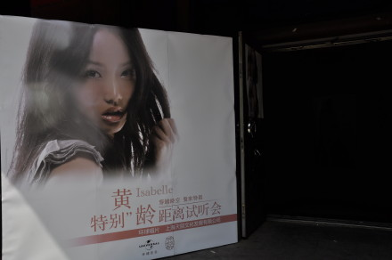
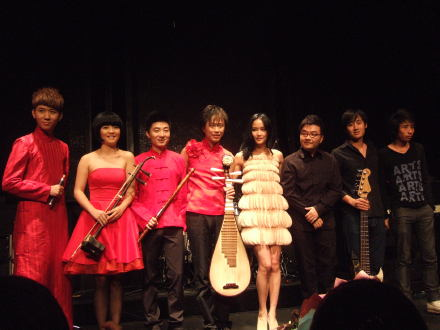
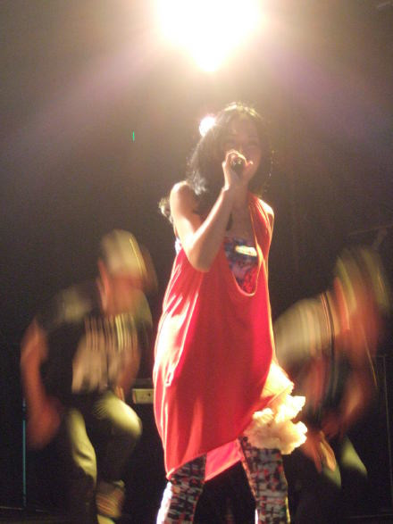
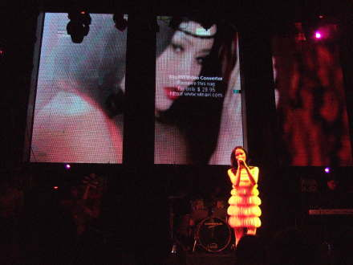
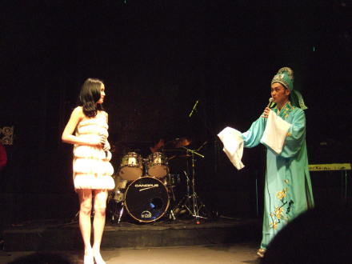
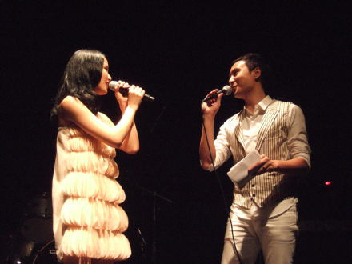
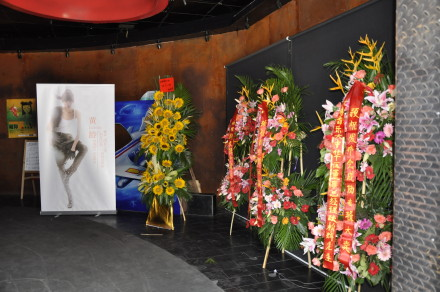

这次非常荣幸邀请到”月之源“四位非常有魅力的乐手合作，在音乐总监田汨老师的指挥下我们一起演绎了现场版的《特别》，《灵芝缘》和《小城故事》，虽然在唱《特别》的时候出现了一点小状况，但是我们万能的音响总监莫老师及时解决了问题，谢谢他们让我拥有这么特别的现场...
其实那天的场地里面比较闷，所以大家辛苦了，感谢我的爸爸妈妈带着他们的兄弟姐妹来看我，感谢我好朋友们对我的支持，还有我最疼爱我的声乐老师....感谢101电台，感谢为我录vcr的艺人朋友老师们...好多哦，总之感谢那天我亲自邀请和没有亲自邀请的每一个人的到来...黄太后爱你们，还有我自称“皇帝”的皇儿胡师兄，因为工作繁忙没有办法赶到现场为母后加油，不过没关系，我会带着皇儿在北京站现身的...
那天都没有来得及和门口的大海报合影，等我走出来的时候已经被搬走了555555

“月之源”，我，田汨老师，和特邀的bass和鼓老师，
谢谢caster舞蹈团的老师nic老师帮我编“太后”的舞蹈，虽然我看起来不胖，但是分量也不清，所以第一托举动作应该有累到你们，呵呵，其实有很多你们的帅照，不过我最喜欢这张的效果，不好意思阿
非常荣幸有请台湾最佳音乐录音带导演陈映之为拍摄了《小城故事》的mv，谢谢你连夜为我剪片子。
感谢越剧大师裘隆和我一起演唱《灵芝缘》，他穿着戏服上台的时候我自己都搞不清楚是在古代和是现代了，真的非常入戏。
三年前《痒》发布会的主持人是朱桢，感谢有眼光的朱桢又一次推掉所有的工作来为我主持《特别》的试听会。
555555谢谢大家送给我那么多美丽的鲜花，能捧的都捧回家了，这些实在没有办法搬回去，可惜可惜，向日葵很抢戏吧

谢谢caster舞蹈团的老师nic老师帮我编“太后”的舞蹈，虽然我看起来不胖，但是分量也不清，所以第一托举动作应该有累到你们，呵呵，其实有很多你们的帅照，不过我最喜欢这张的效果，不好意思阿

非常荣幸有请台湾最佳音乐录音带导演陈映之为拍摄了《小城故事》的mv，谢谢你连夜为我剪片子。

感谢越剧大师裘隆和我一起演唱《灵芝缘》，他穿着戏服上台的时候我自己都搞不清楚是在古代和是现代了，真的非常入戏。

三年前《痒》发布会的主持人是朱桢，感谢有眼光的朱桢又一次推掉所有的工作来为我主持《特别》的试听会。

555555谢谢大家送给我那么多美丽的鲜花，能捧的都捧回家了，这些实在没有办法搬回去，可惜可惜，向日葵很抢戏吧
